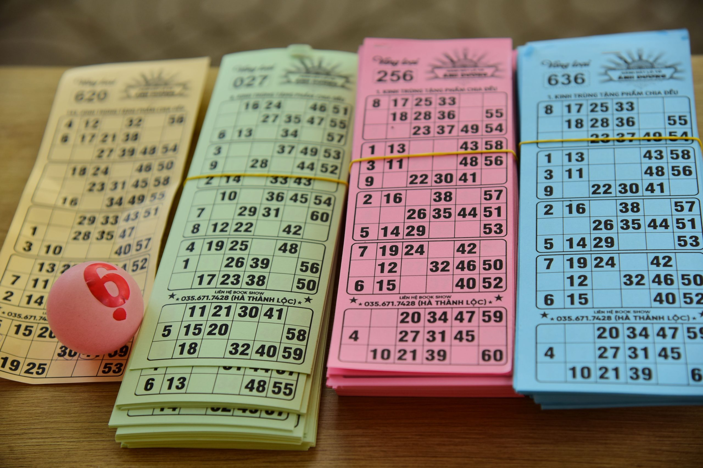
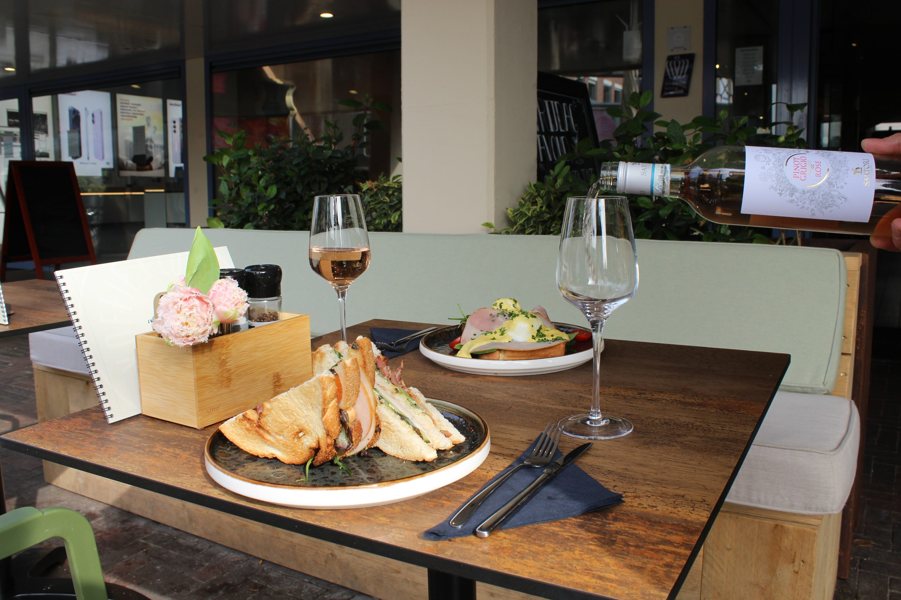
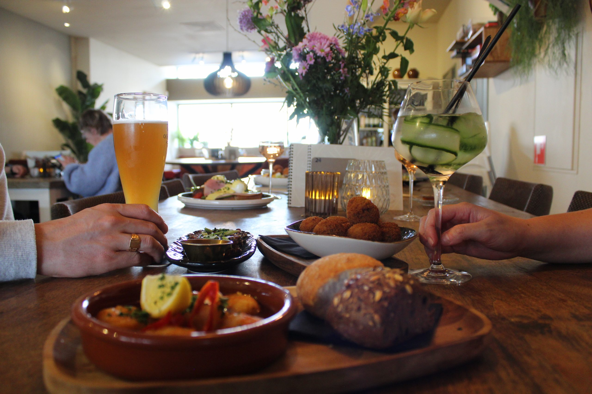
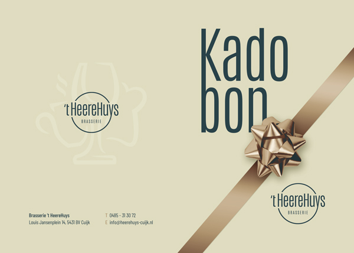

Elke 2e vrijdag van de maand, 20.00 uur
Muziekbingo
Elke keer met een thema: eerder waren dat bijvoorbeeld een Hollandse avond en Back to the 90's.

Brasserie in het centrum van Cuijk, aan het Louis Jansenplein. Voor een kop koffie met gebak, een verse lunch, een glas wijn op het terras of een borrel met vrienden.
Leuk nieuws! Je kunt nu ook op vrijdagavond bij ons terecht voor een gezellige borrel. We zijn elke vrijdag open tot 00.00 uur.
Ons team verwelkomt je dagelijks met een glimlach en zorgt ervoor dat je je direct op je gemak voelt. Bij 't HeereHuys ervaar je de Brabantse warmte in elk detail.
Ons vernieuwde menu staat vol met smaakvolle nieuwe gerechten, maar ook vertrouwde klassiekers ontbreken niet. Geniet van nieuwe lunchgerechten, een uitgebreide wijnkaart én heerlijke borrelhapjes. Of je nu langskomt voor een kop koffie met gebak, een smakelijke lunch of een borrel met vrienden: je bent van harte welkom!
Team brasserie 't HeereHuys

Elke 2e vrijdag van de maand, 20.00 uur
Elke keer met een thema: eerder waren dat bijvoorbeeld een Hollandse avond en Back to the 90's.

Elke 3e vrijdag van de maand, 16.00 – 20.00 uur
De vrijdagmiddagborrel van 't HeereHuys: de week afsluiten met collega's of vrienden.
't HeereHuys is een officieel afstappunt van Fietsnetwerk. Stap af voor koffie, lunch of een borrel op het terras. Mooie routes vanaf hier:
Leuk, dat kan! Of het nu gaat om een gezellige borrel, een verjaardag of een zakelijke bijeenkomst: wij denken graag met je mee om er iets moois van te maken. Samen bekijken we de mogelijkheden en zorgen we voor een invulling die helemaal past bij jouw wensen.

Op zoek naar een leuk cadeau? Met de kadobon van 't HeereHuys zit je altijd goed: leuk om te geven én heerlijk om te krijgen.
Verkrijgbaar in bedragen van € 10, € 15 en € 20. Liever zelf een bedrag bepalen? Kies een blanco kadobon, met ruimte voor een persoonlijke boodschap.
Reserveren bij ons is mogelijk en we denken graag met je mee over de mogelijkheden. Voor de snelste service bel je ons even.
0485 – 31 30 72Liever reserveren via de mail? reserveren@heerehuys-cuijk.nl
| Maandag | 9.30 – 18.00 |
|---|---|
| Dinsdag | 9.30 – 18.00 |
| Woensdag | 9.30 – 18.00 |
| Donderdag | 9.30 – 18.00 |
| Vrijdag | 9.30 – 00.00 |
| Zaterdag | 9.30 – 00.00 |
| Zondag | gesloten |
De keuken sluit een half uur voor sluitingstijd. Op vrijdag en zaterdag sluit de keuken om 20.30 uur.
We zoeken een medewerker bediening voor 24 tot 32 uur per week (meer in overleg). 't HeereHuys is een gezellige brasserie midden in het centrum van Cuijk, met een informele sfeer, steeds meer activiteiten en een avondaanbod dat groeit.
Gasten ontvangen en adviseren, bestellingen opnemen, koffie en drankjes maken, serveren, je eigen deel van restaurant of terras verzorgen, afrekenen, de zaak netjes houden, en openen en afsluiten.
Bij voorkeur ervaring, zelfstandig werken, goed Nederlands en flexibel (ook op zaterdag en 's avonds). Af en toe een evenement of extra openingsdag.
Brutouurloon vanaf € 15,68, fooi elke vier weken, lunch op elke werkdag, 25% personeelskorting, je rooster minimaal 2 weken vooraf, dag- en avonddiensten en meestal een vrije zondag.
Solliciteren? Stuur je cv met een paar regels over jezelf via Indeed.
0485 – 31 30 72
info@heerehuys-cuijk.nl